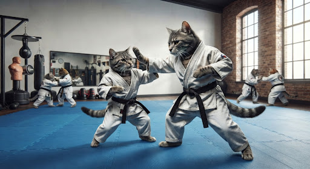

Krav Maga de felinos: primeiro dojo é inaugurado no Brasil

SÃO PAULO — O dia 10 de agosto de 2026 entrou para a história dos amantes de gatos após a inauguração do primeiro dojo especializado em Krav Maga para felinos. O estabelecimento promete ensinar técnicas de defesa pessoal para gatos domésticos, incluindo esquivas, saltos estratégicos e a famosa "patada de emergência".
O projeto foi criado pelo instrutor Marcelo Tanaka, que afirma ter desenvolvido o método depois de perceber que os gatos possuem "um potencial enorme para artes marciais, mas não sabem aproveitar".
Segundo o instrutor, a ideia surgiu após ele observar seu próprio gato derrubar um vaso de flores, fugir imediatamente e se esconder atrás do sofá.
"Naquele momento eu percebi que ele já tinha três fundamentos do Krav Maga: ataque, fuga e esconderijo. Só faltava treinamento."
A inauguração do primeiro dojo felino
A cerimônia de inauguração aconteceu no dia 10 de agosto de 2026 e contou com a presença de aproximadamente 40 gatos e seus respectivos donos. A expectativa era realizar uma demonstração das primeiras técnicas desenvolvidas exclusivamente para os animais.
O evento começou com uma apresentação dos instrutores. Entretanto, os gatos presentes aparentemente não demonstraram interesse na programação.
Dos 40 animais convidados, apenas sete permaneceram no tatame por mais de dois minutos.
"Foi um resultado excelente. Normalmente eles vão embora em menos de trinta segundos", explicou Marcelo.

Treinamento inclui técnicas inusitadas
O curso é dividido em diferentes níveis e utiliza brinquedos, almofadas e objetos leves para simular situações de perigo.
Entre as técnicas ensinadas estão a Esquiva do Aspirador, utilizada quando o gato precisa escapar rapidamente de um aparelho doméstico, e o Contra-Ataque da Cortina, criado para situações em que o animal fica preso enquanto tenta escalar.
Existe ainda uma técnica considerada avançada pelos instrutores: o Olhar Intimidador.
Segundo os responsáveis pelo dojo, o movimento consiste em permanecer completamente imóvel enquanto encara o adversário durante vários segundos.
"Essa é provavelmente a técnica que eles aprendem mais rápido", afirmou o instrutor.
O aluno mais promissor
Entre os participantes da inauguração, um gato chamado Bruce Lee teria chamado a atenção dos professores.
O animal, de dois anos, conseguiu completar uma sequência de saltos, derrubar três almofadas e escapar de uma tentativa de carinho durante a primeira aula.
Para os instrutores, o último feito foi considerado particularmente impressionante.
"Ele demonstrou reflexos incríveis. Quando a dona tentou fazer carinho, ele desapareceu em menos de um segundo. É um talento natural."
Nem todos os gatos aprovaram a novidade
Apesar do sucesso da inauguração, alguns gatos aparentemente não ficaram satisfeitos com a proposta.
Durante a cerimônia, três animais teriam simplesmente sentado de costas para os instrutores e se recusado a participar das atividades.
Um deles chegou a abandonar o tatame e dormir dentro de uma mochila.
"Respeitamos a decisão. No Krav Maga, saber quando lutar também significa saber quando não lutar", explicou Marcelo.
O dojo já tem fila de espera
Apesar dos acontecimentos durante a inauguração, o projeto teria despertado grande interesse entre os donos de animais.
Segundo a administração, mais de 200 gatos já estariam cadastrados para as próximas aulas.
O treinamento terá duração de oito semanas e, ao final do curso, os gatos que completarem todas as etapas receberão uma faixa simbólica.
A primeira turma receberá a faixa branca. O nível máximo atualmente planejado será a faixa preta, embora os instrutores ainda não tenham decidido como colocar a faixa em um gato sem que ele tente destruí-la.
"Nosso objetivo é simples: transformar gatos comuns em gatos preparados para enfrentar qualquer ameaça doméstica."
O primeiro dojo de Krav Maga felino já está funcionando. A próxima turma está prevista para começar nas próximas semanas, caso os gatos participantes decidam comparecer.